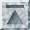
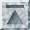

![[prev]](Images/DocsLeftArrow.gif)
![[next]](Images/DocsRightArrow.gif)
![[up]](Images/DocsUpArrow.gif) 

I've tried to place literal text that you type in the <CODE> markup, which looks
Top takes you to the Topmost level(e.g., Home) page.
like this.